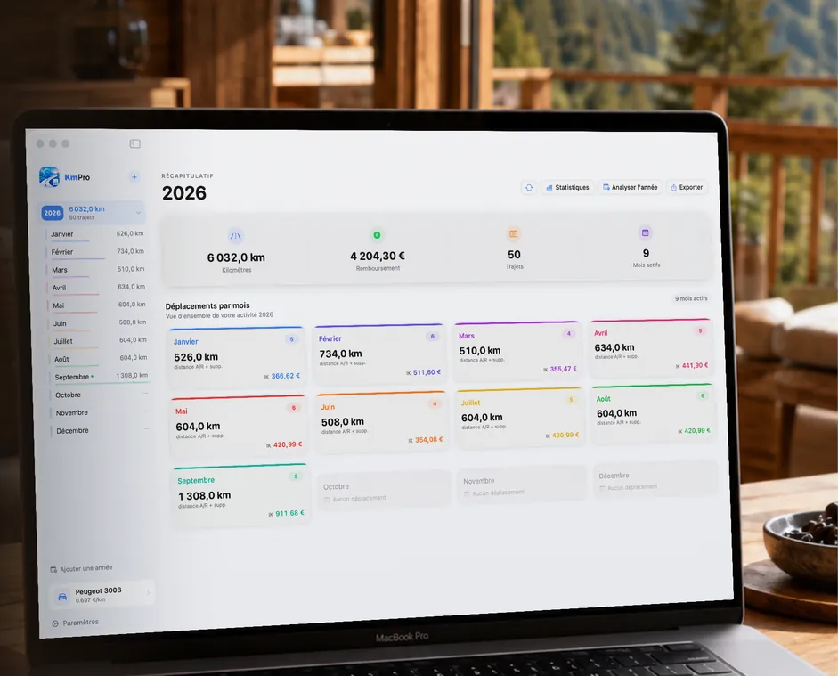

Année 2026
Taux kilométrique 2026 : CHF 0.75 par kilomètre
Pour la période fiscale 2026, le montant retenu par kilomètre parcouru avec un véhicule privé à des fins professionnelles passe de CHF 0.70 à CHF 0.75. C’est la première revalorisation depuis 2016.
| Période fiscale | Montant par kilomètre |
|---|---|
| Jusqu’en 2025 | CHF 0.70 |
| À partir de 2026 | CHF 0.75 |
D’où vient ce montant
Il est fixé par l’ordonnance du DFF sur la déduction des frais professionnels (RS 642.118.1), et désormais aligné sur le prix au kilomètre publié chaque année par le TCS. Ce prix tient compte de l’amortissement du véhicule, de l’entretien, des réparations, des pneus, du carburant et de l’assurance — d’où un montant forfaitaire par kilomètre, plutôt qu’un décompte poste par poste.
Ce que la Suisse ne fait pas, contrairement à la France
Deux différences qui surprennent souvent ceux qui connaissent le système français :
- Pas de barème par chevaux fiscaux. La puissance du véhicule n’entre pas dans le calcul : une petite citadine et un break donnent le même montant au kilomètre.
- Pas de tranches de kilométrage. Le taux ne diminue pas à mesure que les kilomètres s’accumulent. Le calcul reste une simple multiplication, quel que soit le total annuel.
En contrepartie, la justification compte davantage : c’est le carnet de bord qui établit la réalité des trajets.
Trois exemples
| Kilomètres professionnels | Calcul | Montant |
|---|---|---|
| 2 400 km | 2 400 × 0.75 | CHF 1 800.00 |
| 8 500 km | 8 500 × 0.75 | CHF 6 375.00 |
| 17 000 km | 17 000 × 0.75 | CHF 12 750.00 |
Un taux de référence, pas une obligation absolue
Ce montant sert de repère. Un règlement de frais d’entreprise approuvé par l’autorité fiscale cantonale peut en retenir un autre, et votre fiduciaire peut appliquer une pratique cantonale différente. C’est pourquoi le taux reste modifiable dans KmPro : vous saisissez celui qui vous concerne, et il s’applique ensuite à tous vos trajets.

Indépendant, salarié ou dirigeant : qui l’applique
L’indépendant déduit ses frais de véhicule comme charge justifiée par l’usage commercial. Le salarié qui utilise sa voiture privée pour son employeur se la fait rembourser, généralement selon le règlement de frais de l’entreprise. Le dirigeant se rembourse sur la même base. Dans les trois cas, le montant n’a de valeur que si les trajets sont documentés.
Suivre ses kilomètres avec KmProSource : ordonnance du DFF sur la déduction des frais professionnels (RS 642.118.1). Informations données à titre indicatif ; les pratiques cantonales varient, demandez confirmation à votre fiduciaire.